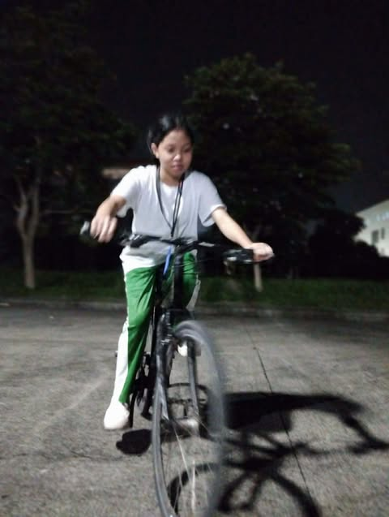

Out on a ride
My Hobby: Biking
Biking is one of my hobbies, and I love riding my bike on scenic roads and exploring new places. It's a great way to stay active, clear my mind, and enjoy the outdoors. Whenever I ride, I feel the fresh air on my face, the warmth of the sun on my skin, and the joy of movement. It's a great way to forget about problems and relax.
Through biking, I feel a sense of freedom and confidence. I get to explore new places and see beautiful scenery. It's a great way to exercise and stay healthy. And, of course, it helps me relax and unwind during stressful times.
That's why biking is an important part of my life. It's a hobby that gives me freedom, confidence, and joy.
Scenic Rides
Riding on scenic roads and exploring new places is the best part. Feeling the fresh air and warmth of the sun makes every ride special.
Freedom & Confidence
Biking brings a sense of freedom and confidence. It's empowering to explore the world on your own terms.
Staying Active
It's a great way to exercise, stay healthy, and keep the body moving while having fun at the same time.
Stress Relief
Biking helps clear the mind and unwind during stressful times. It's the perfect escape from everyday worries.